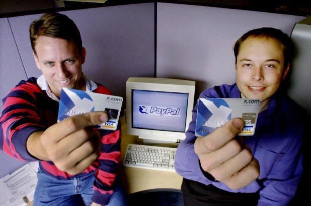

Elon Reeve Musk
Илон Рив Маск
дата рождения: 28 июня 1971 (52 г.)
место рождения: Претория, ЮАР
рост, вес: 1,87 м., 87 кг.
родители: Эролл Маск(отец), Мэй маск(мать)
состояние: 241,1 миллиарда USD (2023 г.)
Детство и юность:

Илон Маск в детстве
Илон родился 28 июня 1971 года в столице Южно-Африканской Республики, Претории. Родители Маска развелись, когда ему было всего 10 лет, он с братом решил остаться с отцом. Мать Илона Маска, Мэй Маск, является канадско-южноафриканской моделью. Мэй и её муж Эррол Маск, отец Илона, выросли вместе в одном районе. Эррол работал инженером-строителем, а Мэй была практикующим диетологом. Братьям частенько приходилось работать на стройке, там они научились класть кирпичи, устанавливать разное обородувание и монтировать проводку. Илон старший ребенок в семье, у него есть младший брат Кимбал и младшая сестра Тоска.
С самого детства Илон проявлял интерес к физике и исследованию космоса. Отец Илона говорил, что Илон был интровертом и заучкой, из-за чего над ним издевались в школе. После одного из случаев избиения он даже попал в больницу. Его перевели в другую школу, где атмосфера была более дружелюбной. Тем не менее, Илон оставался замкнутым, и у него так и не появилось близких друзей в школе. Это было частично обусловлено тем, что он был самым младшим и самым маленьким в классе, по словам его матери.
Илон стремительно развивался и проявил невероятные способности в области обучения. В восьмилетнем возрасте он изучил британскую энциклопедию, а в десять лет, когда у Илона появился компьютер (8-битная модель Commodore VIC-20 1981 года), он успешно завершил курс программирования, рассчитанный на полгода, всего за три дня. В возрасте 12 лет он создал свою собственную видеоигру под названием "Бластер" и продал её за 500 долларов. Он инвестировал свои деньги в местную фармацевтическую фирму. Эти деньги впоследствии помогли уехать ему из Африки
Юношеские годы
Университет Квинс, Кингстон
В свои 14 лет Илон Маск уже начал задаваться вопросами о смысле своего существования и выработал четкую цель – спасти мир. С этой миссией он отправился учиться на запад, выбрав для этого Канаду. В Антарио он поступил в университет Куинс в Кингстоне, где учился с 1989 по 1991 год. Позже он перевелся в Пенсильванский университет, чтобы изучать бизнес и физику, и получил степени бакалавра экономики и бакалавра физики.
В 1995 году Маск решил продолжить образование в Стэнфордском университете, стремясь получить PhD по прикладной физике и материаловедению. . Однако его поступление совпало с интернет-бумом что привлекало его куда больше чем учеба, и, чтобы принять в нём участие, Маск покинул Стэнфорд всего через два дня после поступления.
Освободившись от учебных обязанностей, Маск основал свою первую компанию, Zip2 Corporation (первый путеводитель по городам), в партнерстве с младшим братом. Этот проект представлял собой путеводитель по городам и был замечен крупными инвесторами из Силиконовой долины. Компанию приобрели за 300 миллионов долларов, принося Маску приличный капитал для новых предприятий.

В тот момент Илон работал не покладая рук он выходил из офиса чтобы помыться и сделать другие дела.
Он не замедлительно начал новый проект – интернет-банкинг x.com. В ходе развития этого проекта появилась платежная система PayPal. Однако, вскоре после запуска, Маска сместили с поста главы компании после разногласий с партнерами. Его предложение перенести программу на платформу Windows было отклонено, и это привело к его отстранению от компании.
Тем не менее, в 2002 году eBay приобрела PayPal за 1,5 миллиарда долларов, что принесло Маску значительные дивиденды. Его доля от этой сделки составила 165 миллионов долларов. Этот опыт стал частью его бурного предпринимательского пути и подготовил почву для будущих амбициозных проектов в области космоса, электротранспорта и технологий.
Переломный момент
Октябрь 2001 года стал переломным моментом в биографии Илона Маска. В это время бизнесмен приезжал в Москву с амбициозным планом – купить переоборудованную межконтинентальную баллистическую ракету для отправки мышей на Марс. Однако сделка сорвалась, и Маск вернулся в США с разочарованием.
В феврале 2002 года Илон Маск решил повторно попытаться осуществить свою мечту и вновь приехал в Москву с портфелем, полным долларов, с намерением купить уже три ракеты. На встрече с представителями "Космотраса" ему была названа цена в $8 млн за ракету. Маск предложил ту же сумму за две, но его предложение было отклонено. Этот опыт укрепил убеждение Маска в том, что русские либо не желают вести бизнес с ним, либо пытаются получить максимальную выгоду.
Возвращаясь из России, Илон Маск решил, что если никто не поможет ему достичь своей цели, он сделает это сам. Так началась история SpaceX. В сентябре 2008 года ракета Falcon 1 стала первой в истории частной ракетой на жидком топливе, которая вышла на орбиту Земли. На разработку этого проекта Маск потратил 100 миллионов долларов из своего капитала.
SpaceX достигла нового масштабного достижения, установив рекорд по количеству космических аппаратов, запущенных на орбиту за один раз. Компания, основанная Илоном Маском, отправила в космос целых 114 спутников, побив предыдущий рекорд, удерживавшийся с 2017 года, когда Индия запустила 104 космических аппарата с использованием ракеты PLSV.
Исторический запуск ракеты Falcon 9, который состоялся вчера в 09:56 по местному времени с космодрома на мысе Канаверал (Флорида), стал частью миссии Transporter-6. Не только SpaceX установила новый рекорд, но также продемонстрировала впечатляющую технологию повторного использования ракеты Falcon 9. Первая ступень ракеты уже была задействована в 14 предыдущих запусках, и в этот раз ее успешно вернули на Землю для будущего повторного использования.
114 запущенных на орбиту спутников обладают разнообразным функционалом, включая мониторинг погоды, отслеживание изменений в окружающей среде, а также обеспечение связи для Интернета вещей.
Кроме того, в 2004 году Маск проинвестировал в проект Tesla Motors, который впоследствии превратился в компанию Tesla. В 2006 году благодаря его активному участию появился электрический автомобиль Tesla Roadster. В этот же период Маск стал исполнительным директором Tesla.
В 2008 году кризис ограничил возможности Маска, и он инвестировал 40 миллионов долларов из своего кармана в Tesla, предоставив еще столько же в виде займа. Таким образом, он стал генеральным директором компании, снова взяв рулевое управление в трудный момент.
Однако, впрочем, проблемы не ограничивались только кризисом. Tesla сталкивалась с техническими проблемами, что затрудняло запуск ракет в срок и создавало финансовые трудности. Тем не менее, Илон Маск продолжал бороться за свои идеи и проекты, что впоследствии сделало его одним из самых влиятельных предпринимателей в мире.